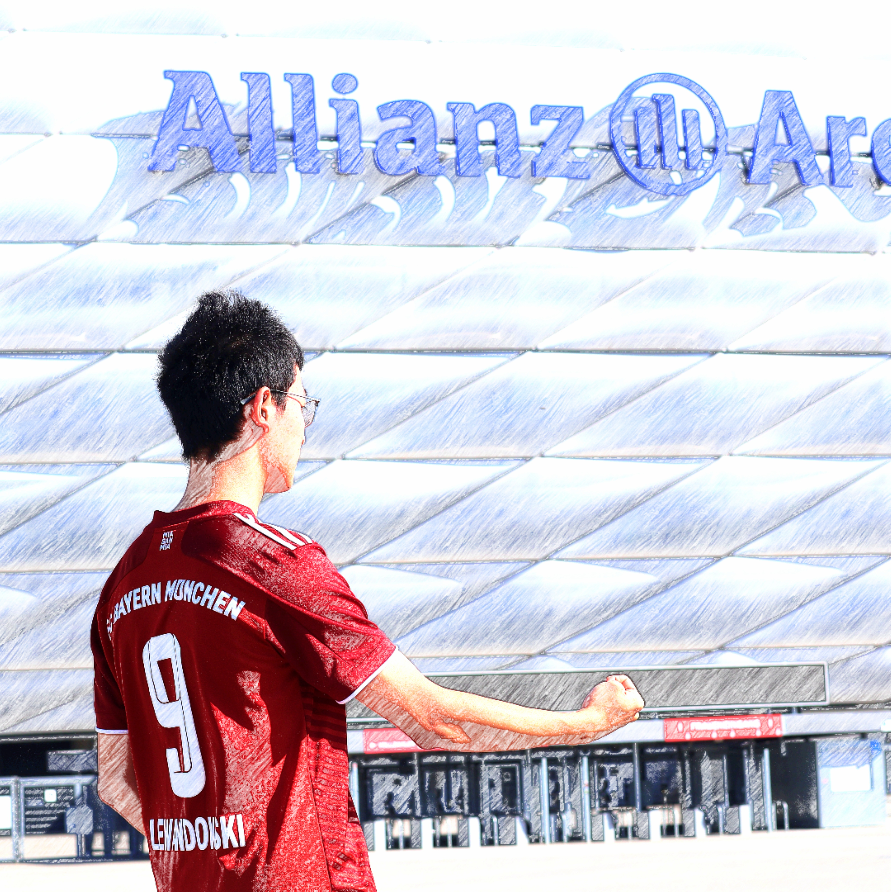

Follow Me...
Undergraduate student at Tsinghua University, studying reinforcement learning for reasoning and agentic robotics.

I am a B.Eng. student in Automation at Tsinghua University, advised by Prof. Gao Huang in LeapLab. My research spans reinforcement learning for reasoning in language models and agentic learning for robotic control. My earlier work examined the limits of reinforcement learning with verifiable rewards (RLVR) in extending LLM reasoning. In Code as Primitives, we study how frontier models synthesize executable low-level robotic controllers and refine them through simulation feedback.
2026
Sensetime Scholarship
2025 & 2024
National Scholarship of China
Reinforcement Learning & Reasoning in LLMs and MLLMs,
Agentic Robotics & World Models
Find the essence of reinforcement learning for reasoning and build a universal theory for reasoning.
GPA 4.0/4.0 (Rank 1/173).
Exploring next-era world models.
Core contributor to the program Limit-of-RLVR.
I am actively looking for collaborations on RL and other topics. Feel free to reach out via email—I'm happy to talk!